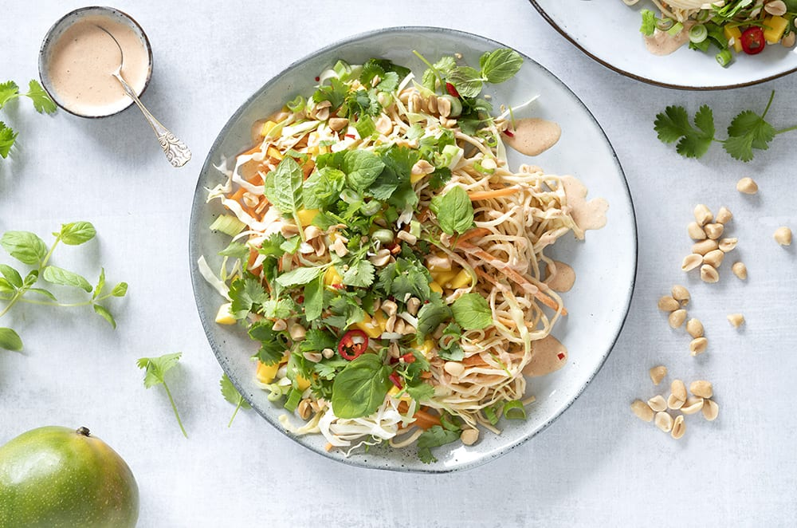

Asiatisk nudelsalat
Original opskrift
Ingredienser
- 250 g nudler
- 0,50 spidskål, fintsnittet
- 3 gulerod, i juliennestrimler
- 1 mango, skåret i skiver
- 1 håndfuld frisk koriander
- 1 håndfuld frisk mynte
- 2 forårsløg, i tynde skiver
- 1 dl peanuts, grofthakkede
- 1 rød chili, i skiver
Asiatisk Dressing
- 2 spsk mayonnaise
- 2 spsk cremefraiche 18 %
- 1 tsk sriracha chilisauce
- 1 fed hvidløg, presset
- 0,50 tsk røget paprika
- 1 spsk fishsauce
- 1 lime, saften herfra
- 1 tsk ingefær, fintrevet
Rør dressingen sammen og smag til. Lad den trække smag, mens resten af salaten tilberedes.
Kog nudler efter anvisning på pakken. Hæld vandet fra og skyl dem under rindende koldt vand gennem en sigte.
Vend nudler, samt halvdelen af spidskål og gulerødder godt med 2 spsk dressing og anret på et fad, sammen med
resten af spidskål, gulerødder samt mango. Fordel dressingen over.
Drys koriander, mynte, forårsløg, peanuts og rød chili over inden servering.